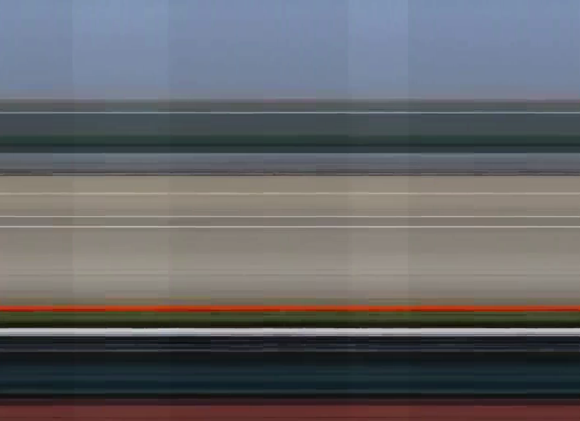
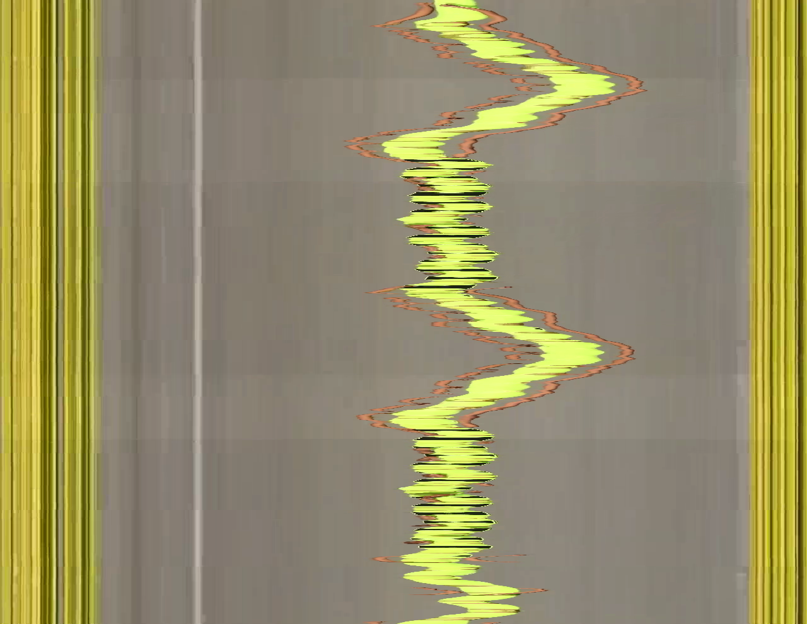
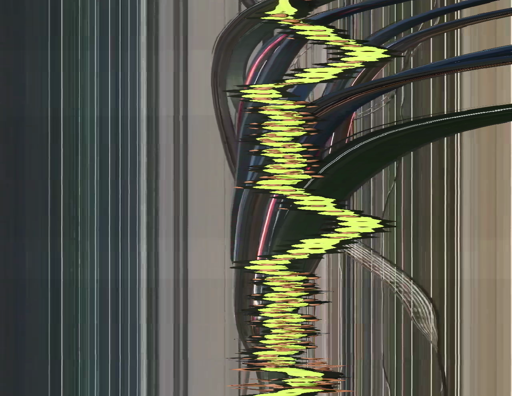

A video is not a stack of images. It is an X-Y-T spacetime volume.
Slitscan cuts surfaces through that volume — each spatial column of the output
is sourced from a different moment in time, warping footage into shapes that
no single frame can contain.
sweep modeslitscan render input.mp4 output.mp4 --profile ramp --fill wrapvideo → video with per-column time displacement
collapse modeslitscan collapse input.mp4 photofinish.png --slit-position 0.5video → single image, slit history accumulated over time
A normal video reads the X-Y plane at each time step T, showing
every pixel from the same moment. Slit-scan breaks that synchrony.
The engine maps each spatial column to a different T-slice,
assembling a single output frame from many different moments.
The core operation reduces to one function evaluated once per output frame:
Canonical source-frame formula
source_frame(x, output_t) = output_t − delay[x] x — spatial band index (0 … width-1) output_t — current output frame delay[x] — frames behind the vanguard for band x (always ≥ 0) vanguard — the band with delay=0; reads the most current input frame
The vanguard edge (delay = 0) tracks the present.
The lagging edge (delay = max_delay) looks furthest into the past.
As the clip plays, this temporal rake sweeps through the footage — reading
across a single output frame from left to right is equivalent to reading
backward through time.
input frames: ←──── time ────→
[t-N] ... [t-2] [t-1] [t]
output frame at time t:
col 0 (vanguard) ← from frame t (delay=0)
col 1 ← from frame t-1 (delay=1)
col 2 ← from frame t-2 (delay=2)
...
col W-1 (lagging) ← from frame t-(W-1) (delay=W-1)
Architecture
The pipeline is fully layered — each stage is independently testable and
can be swapped without touching the others.
Key invariant: profiles and oscillators are pure functions.
Static renders, animated sweeps, and LFO-modulated surfaces all run through
identical code — the render engine cannot distinguish them.
§ 02
Delay profiles
A profile is a pure function delay_map(x_coords, output_t, params) → ndarray
that maps each band's position to a delay value. Three profiles ship with v1.
The vanguard position (0.0–1.0) controls which end of the frame leads in time.
Profile
Delay surface shape
Character
ramp
Linearly increases from vanguard to opposite edge
Classic temporal rake. One edge leads, one lags. Reading across the frame = reading through time.
tent
Delay peaks at center, falls to zero at both edges
Temporal fold. Both edges are "now"; the center is furthest in the past. Creates symmetrical distortion.
reverse
Mirror of ramp (vanguard on opposite side)
Inverted rake. Right edge leads. Useful for comparing temporal direction or for paired motion studies.
ramp · default
Left edge reads frame t, right edge reads t − 1279. The dancer's motion is sheared diagonally across time.
slitscan render 2020.mp4 out.mp4
tent
Both edges read the present; the center looks furthest back. Produces a bilateral temporal mirror.
slitscan render 2020.mp4 out.mp4 --profile tent
reverse · max-delay 150
Inverted ramp with a reduced spread of 150 frames — the right edge now leads. Delay range compressed for comparison.
The default axis is x — bands are vertical slices (columns),
delay varies left-to-right. Switching to --axis y makes bands
horizontal slices (rows), delay varying top-to-bottom. Same formula,
rotated 90°.
axis x (default)
Vertical column bands. Horizontal motion shears the figure temporally across the frame width.
slitscan render 2020.mp4 out.mp4 --axis x
axis y · ramp
Horizontal row bands. Vertical motion — like the dancer's arms and legs — is sheared temporally top-to-bottom.
slitscan render 2020.mp4 out.mp4 --axis y
axis y · tent
Tent profile on the y-axis. Top and bottom rows are "now"; the horizontal mid-band looks furthest back.
slitscan render 2020.mp4 out.mp4 --axis y --profile tent
axis y · tent · wrap
Same as above with --fill wrap, eliminating the black fill zones at clip boundaries for seamless looping.
slitscan render 2020.mp4 out.mp4 --axis y --profile tent --fill wrap
§ 04
Temporal spread — --max-delay
--max-delay N sets how many frames separate the vanguard and lagging
edges. The default is extent − 1 (full width or height in pixels).
Smaller values compress the temporal window; larger values stretch it across
more of the clip's history.
With the 30fps source at 1280px wide, the default max-delay of 1279 frames
spans ~42.6 seconds of footage in a single output frame. Reducing to 300
frames (10s) concentrates the distortion; the dancer's body remains more
coherent while subtle temporal seams appear at phase transitions.
max-delay 300 frames (~10s)
Tight temporal window. The figure is recognisable; distortion is subtle shearing.
slitscan render 2020.mp4 out.mp4 --max-delay 300
max-delay 900 frames (~30s)
Wide spread. The trailing edge is 30 seconds behind the leading edge within a single output frame.
slitscan render 2020.mp4 out.mp4 --max-delay 900
max-delay 1279 (full extent, default)
Every pixel column references a unique frame. The full 992-frame clip is visible in a single output frame as a temporal panorama.
By default each band is 1 pixel wide, producing a smooth temporal gradient.
Increasing --slice-width groups pixels into wider bands that share
a single source frame, making the discrete temporal structure explicit.
Wide bands reveal the underlying mechanism: each block is a vertical strip
taken from a specific frame, placed side by side. At --slice-width 1
these strips are individual pixel columns and the seams disappear; at wider
values they become visible as a temporal mosaic.
slice-width 1 (default)
Smooth temporal gradient — 1280 individual column sources, each a unique frame.
slitscan render 2020.mp4 out.mp4
slice-width 40
32 wide bands of 40px each. The seams between temporal blocks become legible. Each block shows the same column of pixels from its assigned frame.
slitscan render 2020.mp4 out.mp4 --slice-width 40
slice-width 40 · wrap
Banded with fill=wrap. The clip loops seamlessly at band boundaries, allowing infinite playback as an installation.
When a band references a frame before index 0 or after the last frame,
the fill mode determines what appears. Five modes: black,
white, transparent, hold, and wrap.
Wrap is the key to seamless infinite loops.
Mode
Out-of-range behavior
Use case
black
Solid black pixel
Default. Shows the clip boundaries explicitly as a fill zone that sweeps across the frame.
white
Solid white pixel
Same as black; for lighter-background compositions.
transparent
Alpha=0 pixel (RGBA output)
Compositing workflows. Requires .mov (ProRes 4444) or .png/.tiff sequence.
hold
Clamp to first/last frame
Freeze-frame at clip boundaries. Avoids black zones without looping.
wrap
frame_index % frame_count
Seamless infinite loop. Out-of-range indices wrap around, so the output plays forever without a seam.
How wrap looping works
With --fill black, the lagging bands reference negative frames
at the start of the clip — a black fill zone sweeps across the output from
right to left. With --fill wrap, those same indices are mapped
to index % 992, connecting the end of the clip to its beginning.
The output video has no seam and can play indefinitely in an installation loop.
Note: the black band visible in the --fill black examples below
is also partly a property of the source footage — the clip opens and closes
on near-black frames. This makes the fill zone especially clean here and
usefully illustrates the temporal boundary sweeping across the frame.
fill black (default)
The lagging-edge fill zone sweeps left as the clip progresses and resets at the end.
--fill black
fill wrap — infinite loop
Same parameters; every band is always populated. The clip loops without any visible seam.
--fill wrap
wrap loop — installation demo
Designed for continuous video art playback. The dancer's motion cycles through the temporal rake
indefinitely — no hard cut, no fill zone, no visible loop point.
slitscan render 2020.mp4 out.mp4 --fill wrap
§ 07
Modulation — the LFO system
Any render parameter can be driven by an oscillator that varies as a function
of output time. The modulation engine resolves new parameters before each frame,
keeping the core formula unchanged.
Modulation formula
resolved(t) = base + offset + depth × osc(2π · cycles_per_frame · t + phase)
dest — target parameter: vanguard | max_delay | slice_width osc — oscillator: sine | triangle rate units — hz (cycles/sec), cyc (cycles/clip), frames (period in frames)
Modulation patches are specified inline with --mod or
in a YAML file with --mod-file. Multiple patches can be
stacked on the same destination.
# Oscillate the vanguard position with a 0.1 Hz sine, ±0.4 amplitude
slitscan render 2020.mp4 out.mp4 \
--profile tent \
--mod "vanguard=sine:rate=0.1hz,depth=0.4"# Oscillate max_delay (temporal spread breathes in and out)
slitscan render 2020.mp4 out.mp4 \
--mod "max_delay=sine:rate=0.25hz,depth=400"# Both simultaneously — compound modulation
slitscan render 2020.mp4 out.mp4 \
--profile tent \
--mod "vanguard=sine:rate=0.1hz,depth=0.4"\
--mod "max_delay=sine:rate=0.05hz,depth=300"
Modulated delay — temporal spread breathes
mod max_delay · sine · 0.25 Hz · depth 400
The temporal window expands and contracts sinusoidally. At its widest, the rake spans deep time; at its narrowest, the image nearly collapses to a single moment.
--mod "max_delay=sine:rate=0.25hz,depth=400"
mod max_delay · wrap
Same modulation with wrap fill. The breathing temporal spread loops without interruption.
The modulated vanguard on a y-axis scan causes the temporal fold to ripple horizontally, tracing the dancer's vertical movements through time.
--axis y --mod "vanguard=sine:rate=0.1hz,depth=0.4"
axis y · mod vanguard · wrap
--axis y --mod "vanguard=sine:rate=0.1hz,depth=0.4" --fill wrap
§ 08
Grid — 2D mosaic slit-scan
Standard slit-scan slices the frame into 1D bands along one axis. Grid mode
splits it into a COLS×ROWS mosaic where every cell reads from
its own source frame — each tile is frozen at a different moment, and the whole
mosaic animates as the clip plays. At Nx1 it reduces to vertical bands,
at 1xN to horizontal bands.
Grid gather — per-cell source frame
1D band: source(band, t) = t − delay[col]← a band spans the full height2D grid: source(cell, t) = t − delay[row, col]← every tile its own moment
Where each cell's time comes from is configurable. By default the chosen
--profile is evaluated across the columns and the rows and combined
with --grid-combine (avg, max, min,
multiply). With ramp averaged across both axes the result is
a diagonal time-field: read corner-to-corner and you read through the whole clip.
On this footage the static parkway stays coherent while the moving figure
fragments tile-by-tile into different moments.
Grid size — from four moments to a near-continuous field
Same diagonal delay field (ramp, averaged, --fill wrap so
every tile always shows real footage); only the tile count changes. Coarse grids
quantize the clip into a few stark moments; fine grids approach a smooth temporal gradient.
2 × 2 — four moments
The clip quartered in time: each quadrant is a different second of the dance, the figure split across the seam.
The delay field need not be a ramp. A tent profile, combined with
max across the two axes, puts the vanguard (time zero, "now")
at the center cell and rakes backward toward the corners — concentric rings of time.
10 × 10 · tent · combine max
Center tiles show the present; time recedes outward to the corners. The figure passing through the center stays current while its echoes lag at the edges.
Spatial LFO fields — time driven by the cell's position
The modulation oscillators from § 07 can drive the grid too —
but here their phase runs over the cell's grid position instead of output time.
Each --grid-mod is an oscillator on the col or row
axis (rate in cycles across that axis); contributions sum, then scale to
--max-delay. One oscillator per axis gives an interference field of times.
# One sine across the columns → vertical stripes of oscillating time
slitscan render 2020.mp4 out.mp4 --grid 16x16 \
--grid-mod "col=sine:rate=2,depth=1" --max-delay 400 --fill wrap
# A sine on each axis → a 2D plaid interference field
slitscan render 2020.mp4 out.mp4 --grid 16x16 \
--grid-mod "col=sine:rate=2,depth=0.5"\
--grid-mod "row=sine:rate=2,depth=0.5" --max-delay 400 --fill wrap
col sine · rate 2 · depth 1
A single oscillator across the columns: each vertical strip of tiles is frozen at an oscillating moment, so time waves left-to-right.
The richest fields come from two--grid-mods — one on
col, one on row — summed per cell. The two oscillators need
not match: different rates, waveforms, phases, and depths between the axes carve very
different temporal terrains out of the same footage. Because contributions sum and then
clamp to [0, max-delay], pushing both depths high produces flat temporal
plateaus with hard walls; keeping them low gives smooth interference.
# Two oscillators, one per axis — the general dual-modulation form
slitscan render 2020.mp4 out.mp4 --grid 24x24 \
--grid-mod "col=sine:rate=4,depth=0.5"\# fast columns
--grid-mod "row=sine:rate=1,depth=0.5"\# slow rows
--max-delay 400 --fill wrap
cross rates · col 4 / row 1
Columns ripple fast against a slow row gradient — vertical bands of staggered time drifting top to bottom.
Implementation: grid mode reuses the same source-frame formula, fill
modes (wrap keeps every tile on real footage), and oscillator catalog as
the 1D engine — it only generalizes the gather from bands to tiles. Dual modulation is
just two --grid-mod entries whose per-cell contributions sum, exactly as
multiple --mod entries sum in 1D. Cells need random access to any frame, so
grid mode always uses the full in-memory buffer.
§ 09
Collapse — strip photography
The collapse command accumulates a single slit's history
across the entire clip into one image. Each frame contributes one column
(or row) at the slit position, laid sequentially — time becomes the
horizontal axis, space the vertical.
This is the technique of photofinish cameras and 19th-century chronophotography:
a fixed slit records motion as it passes, the film advances, and the result
is a spatial-temporal composite in which stillness appears sharp and movement
creates smeared streaks. Different slit positions reveal different aspects
of the subject.
Collapse — output pixel formula
output[t, y] = input[t][y, slit_x]— axis x: one column per frameoutput[x, t] = input[t][slit_y, x]— axis y: one row per frame
output width = frame_count (992 pixels — one per frame)
output height = source height (720px) or width (1280px)
Axis X — vertical slit, time runs horizontally
Each image below is 992 pixels wide (one column per frame) and 720 pixels tall.
The slit position selects which vertical slice of the original frame is accumulated.
Moving the slit across the dancer's body traces different planes of motion.

slit-position 0.2 — left of frame
Background and edge of the parkway. Sparse motion; parked cars produce faint vertical striations.
Switching to --axis y accumulates horizontal rows instead of columns.
The output is 1280 pixels wide and 991 pixels tall (one row per frame).
The slit position now selects a height in the frame — feet, waist, chest, or head —
revealing how different parts of the body move independently over time.
Lower-frequency lateral hip motion. The waveform period corresponds to the choreography's rhythm.
--axis y --slit-position 0.65

axis y · slit at mid-body
Composite torso motion — a blend of hip sway and arm movement at this height.
--axis y --slit-position 0.5

axis y · slit at upper body
Arms and shoulders: wider lateral range, more complex trajectory than lower body.
--axis y --slit-position 0.25
§ 10
Animated GIF output
Pass a .gif extension and the encoder switches to Pillow's
palette quantizer: 256 adaptive colors per frame, Floyd-Steinberg dithering,
infinite loop. No flags needed.
GIF encoding reduces each frame to an 8-bit palette independently.
The dithering introduces a characteristic grain that reads as motion artifact
and complements the temporal distortion.
Files are large at source resolution — use --resize and
--fps for web deployment.
# Output format is inferred from extension — no codec flag needed
slitscan render 2020.mp4 out.gif --fill wrap
slitscan render 2020.mp4 out.gif --fill wrap --resize 640x360 --fps 15
ramp · wrap · gif
Classic ramp profile as an infinite GIF. 256-color dithering visible at full scale.
slitscan render 2020.mp4 out.gif --fill wrap
tent · mod vanguard · wrap · gif
Modulated tent profile — the temporal fold shifts while the palette flickers at peaks of oscillation.
Y-axis scan as GIF. Horizontal banding from the row-slicer is amplified by palette quantization.
slitscan render 2020.mp4 out.gif --axis y --fill wrap
§ 11
Trumbull — fixed-slit gather
In standard slit-scan, each output column is gathered from its own column
position in its source frame. The Trumbull mode changes the gather so that
every output column is taken from a single fixed slit in each source
frame — replicating the technique used for the 2001: A Space Odyssey
Stargate corridor sequence.
Normal vs Trumbull gather
Normal: output[x] = source_frame[t − delay(x)][x]← each col from its own positionTrumbull: output[x] = source_frame[t − delay(x)][slit_x]← all cols from same slit position
The result: a single vertical slit of the source footage — one specific
column of the dancer, picked by --slit-source — is
gathered from 1280 different moments in time and laid across the full width
of the output frame. Rather than seeing a spatial panorama, you see a
temporal panorama of a single spatial point.
When combined with a ramp delay, the slit at position x=640 (center)
sampled from frames t, t-1, t-2, ... t-1279 is tiled across the
full output width, with each column showing a different moment. The
characteristic visual is streaks and halos radiating from motion paths through
the fixed slit — the figure's arms sweep ghostly contrails; static background
elements produce clean vertical bands.
# Slit at frame center, gathering ~42s of history from that one column
slitscan render 2020.mp4 out.mp4 \
--slit-source 0.5\
--profile ramp \
--fill wrap
# Slit at left edge of dancer (approx.)
slitscan render 2020.mp4 out.mp4 --slit-source 0.35 --profile ramp --fill wrap
# Tent profile + fixed slit: bilateral temporal fold from one spatial point
slitscan render 2020.mp4 out.mp4 --slit-source 0.5 --profile tent --fill wrap
trumbull · slit-source 0.5 · ramp · wrap
The frame center slit (x = 640) is sampled from 1280 different moments and tiled horizontally.
The dancer's limbs passing through the slit become horizontal streaks; the parkway background
— stationary through the slit — produces clean repeating bands.
Motion amplitude and timing become directly readable in the horizontal structure of the image.
Original technique: Doug Trumbull and John Whitney Sr. developed fixed-slit
slit-scan photographically in the late 1960s, exposing a single frame of film by moving
the camera past a lit slit while the slit's background artwork moved on a separate
motion-control track. The digital equivalent here collapses that optical process into
a single formula: output[x] = source[t − delay(x)][slit_x].